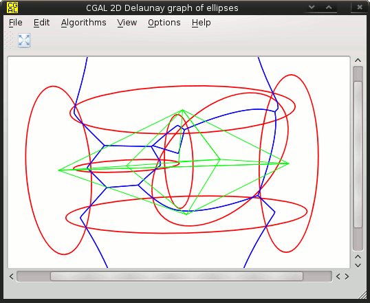
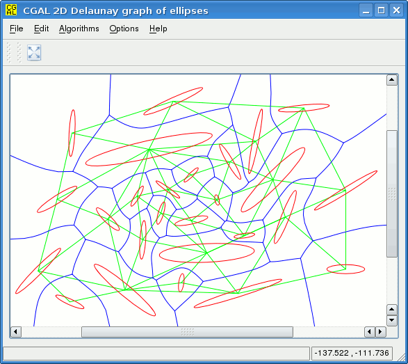

This page is about the Voronoi diagram of ellipses, under the Exact Computation Paradigm. The project started as part of my PhD. Applying exact computation on this problem turns out to be quite demanding, requiring handling of algebraic numbers of degree 184 (among other things). Fore more information, check out my publications.
The source code lies in CGAL's cgal-public-dev github repository. Unfortunately, this version is no longer maintained (and also has nothing to do with modern C++ since I wrote it more than 10 years ago when I was still learning...). It is quite likely that changes are required for the code to compile with a more recent CGAL version.
There was an effort to refactor everything towards a C++17 version. The project however got stalled due to lack of time. If today (as of 2024) I decided to contine, I would definitely target at least C++20 with concepts etc. The new version provides improved handling of algebraic points at infinity and high quality rendering via Asymptote).
Here are two screenshots of the old Qt4 demo:
 
To compile the source you need:
WARNING: This public version of the source is outdated, and might not even compile with newer versions of SYNAPS/MMX. Please, use the newer version in CGAL's repository.
First public release (Dec 8, 2007): vorell-0.1.0.tar.gz
{kind=link}
{kind=link}
{kind=link}
{kind=link}